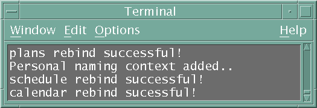
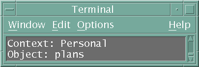

Topics in this section include:
The CORBA COS (Common Object Services) Naming Service provides a tree-like directory for object references much like a filesystem provides a directory structure for files. The Naming Service provided with Java IDL is an implementation of the COS Naming Service specification. The following overview is taken from that document.
A name-to-object association is called a name binding. A name binding is always defined relative to a naming context. A naming context is an object that contains a set of name bindings in which each name is unique. Different names can be bound to an object in the same or different contexts at the same time.
To resolve a name is to determine the object associated with the name in a given context. To bind a name is to create a name binding in a given context. A name is always resolved relative to a context - there are no absolute names.
Because a context is like any other object, it can also be bound to a name in a naming context. Binding contexts in other contexts creates a naming graph - a directed graph with nodes and labeled edges where the nodes are contexts. A naming graph allows more complex names to reference an object. Given a context in a naming graph, a sequence of names can reference an object. This sequence of names (called a compound name) defines a path in the naming graph to navigate the resolution process.
The following figure shows an example of a naming graph. A sample program that illustrates how to add names to the namespace uses this same model.

For an application to use the COS Naming Service, its ORB must know the port of a host running a naming service or have access to a stringified initial naming context for that naming service. The naming service can either be the Java IDL naming service or another COS-compliant naming service.
Prior to running a client or a server, you will start ORBD. ORBD includes a persistent Naming Service and a transient Naming Service, both of which are an implementation of the COS Naming Service.
Both client and server should agree on which root naming context to use. The orb.resolve_initial_references(String name_of_service) method is used to obtain the root naming context. If you get a handle on a Naming Service by providing "NameService" as the name_of_service, you will get a persistent naming service, meaning that the naming context graph will be restored after a service failure. If you get the handle using "TNameService", you will get a transient naming service, meaning that you will need to re-obtain the root naming context using orb.resolve_initial_references(String name_of_service) if there is a service interruption.
For example,
// get the root naming context
org.omg.CORBA.Object objRef =
orb.resolve_initial_references("NameService");
NamingContextExt ncRef = NamingContextExtHelper.narrow(objRef);
The string "NameService" is defined for all CORBA ORBs. When you pass in this string, the ORB returns a naming context object that is an object reference for:
To specify that you want to use the transient naming service with ORBD, pass in the string "TNameService". The string "TNameService" is a proprietary name. When you pass in this string, the ORB returns a naming context object that is an object reference for ORBD's transient name service.
As with all CORBA object references, objRef is a generic CORBA object. To use it as a NamingContextExt object, you must narrow it to its proper type.
NamingContextExtHelper is an idlj-generated helper class, similar in function to HelloHelper. The ncRef object is now an org.omg.CosNaming.NamingContextExt and you can use it to access the naming service and register the server.
NamingContextExt and NamingContextExtHelper are new to this release of J2SE. NamingContextExt is the extension of NamingContext. It contains a set of name bindings in which each name is unique and is part of the Interoperable Naming Service. Different names can be bound to an object in the same or different contexts at the same time. Using NamingContextExt, you can use URL-based names to bind and resolve. NamingContextExtHelper provides additional helper methods like narrow() that are type-specific but don't deal with business logic.
The Interoperable Naming Service (INS) is a URL-based naming system on top of the CORBA Naming Service, as well as a common bootstrap mechanism that lets applications share a common initial naming context.
The Interoperable Naming Service (INS) provides the following features:
An example application that demonstrates how to use the INS can be found at Interoperable Naming Service Example.
The following diagram shows how INS fits into ORBD:

An object reference contains at least three pieces of information: an address, the name of the POA that created an object reference, and an Object ID.
Using INS, you can provide a URL to access the CORBA object, which is more readable than a stringified IOR. The following stringified object reference formats are allowed:
An IOR is an object reference that is understood by ORBs that can interoperate using the OMG-defined protocols GIOP and IIOP. A client can obtain an object reference using orb.object_to_string(objRef), as shown in the Browsing the Namespace example, or as a result of an invocation on another object reference.
Note: If an IOR contains multiple profiles, the J2SE v.1.4 and higher ORB always uses the first one.
The corbaloc: format is useful for CORBA client programs, and is typically used to resolve the reference using the GIOP LocateRequest or Request message. For example, a corbaloc: object reference might look like this:
corbaloc:iiop:1.2@example.com:2050/TraderService
This example show how to get an object reference for TraderService from host example.com on port 2050.
The corbaname: format provides a mechanism for a client to bootstrap directly, and is typically used to resolve the stringified name from the root naming context. For example, a corbaname: object reference might look like this:
corbaname::example.com:2050#Personal/schedule
where example.com is the host, 2050 is the port. The portion of the reference up to the hash mark (corbaname::example.com:2050 ) is the URL that returns the root naming context. This example provides the URL to use to: a) locate the Naming Service, and, b) resolve the name Personal/schedule from the Naming Service.
INS provides ORB options for bootstrapping. To bootstrap a CORBA system, you must give it an object reference. The ORB can be configured to return the handle of a customized CORBA service from resolve_initial_references() using either ORBInitRef and/or ORBDefaultInitRef. For example,
-ORBInitRef TraderService=corbaloc::example.com:2050/TraderService -ORBDefaultInitRef corbaloc:iiop:1.2:example.com:2050
The order of resolution when these options are used is as follows:
For more information about INS, refer to the INS Naming Specification.
To use the Naming Service, you must first write the server and client code that finds and/or creates the namespace and/or the objects in the namespace. Before running the client and server, you must start the Naming Service and tell the client and server where to find it. The following steps loosely suggest what happens when the client and server attempt to access the Naming Service:
The following topics are covered in this section:
The following sample program illustrates how to add names to the
namespace. It is a self-contained Naming Service client that
creates the following simple tree. Naming contexts are in
italics and object references are in normal
font.
In this example, plans is an object reference and Personal is a naming context that contains two object references: calendar and schedule.
import java.util.Properties;
import org.omg.CORBA.*;
import org.omg.CosNaming.*;
public class NameClient
{
public static void main(String args[])
{
try {
In the section, Starting the Naming Service, the name server is started on port 1050 and host localhost. The following code ensures that the client program is aware of this port number and host name.
Properties props = new Properties();
props.put("org.omg.CORBA.ORBInitialPort", "1050");
props.put("org.omg.CORBA.ORBInitialHost", "localhost");
ORB orb = ORB.init(args, props);
The following code obtains the initial naming context and assigns it to ctx. The second line copies ctx into a dummy object reference objref that we'll attach to various names and add into the namespace.
NamingContextExt ctx =
NamingContextExtHelper.narrow(orb.resolve_initial_references(
"NameService"));
org.omg.CORBA.Object objref = ctx;
This code binds the name "plans" to our dummy object reference.
The object reference, "plans", is then added under the initial
naming context using rebind. The rebind
method allows us to run this program over and over again without
getting the exceptions we'd get from using bind.
NameComponent name1[] = ctx.to_name("plans");
ctx.rebind(name1, objref);
System.out.println("plans rebind successful!");
This code creates a new naming context called "Personal". The resulting object reference, ctx2, is bound to the name and added under the initial naming context.
NameComponent name2[] = ctx.to_name("Personal");
NamingContextExt ctx2 = (NamingContextExt)ctx.bind_new_context(name2);
System.out.println("New naming context, Personal, added!");
This code binds the dummy object reference using the names "schedule" and "calendar" under the "Personal" naming context (ctx2).
NameComponent name3[] = ctx.to_name("schedule");
ctx2.rebind(name3, objref);
System.out.println("schedule rebind successful!");
NameComponent name4[] = ctx.to_name("calendar");
ctx2.rebind(name4, objref);
System.out.println("calendar rebind successful!");
} catch (Exception e) {
e.printStackTrace(System.err);
}
}
}
javac NameClient.java
Correct any syntax errors before proceeding.
java NameClient -ORBInitialPort 1050
The output in the terminal window looks like this:
We now have a namespace that to the Naming Service looks like the above diagram.
The following sample program illustrates how to resolve names from the namespace. To resolve a name is to determine the object associated with the name in a given context. When using the persistent Naming Service, you do not need to re-resolve if the Naming Service goes down. If you use a transient Naming Service, you do need to re-resolve in the Naming Service goes down.
In this example, plans is an object reference and Personal is a naming context that contains two object references: calendar and schedule.
import java.util.Properties;
import org.omg.CORBA.*;
import org.omg.CosNaming.*;
public class NameClientResolve
{
public static void main(String args[])
{
try {
In the section, Starting the Naming Service, the name server is started on port 1050 and host localhost. The following code ensures that the client program is aware of this port number and host name.
Properties props = new Properties();
props.put("org.omg.CORBA.ORBInitialPort", "1050");
props.put("org.omg.CORBA.ORBInitialHost", "localhost");
ORB orb = ORB.init(args, props);
The following code obtains the initial naming context and assigns it to nc.
NamingContextExt nc =
NamingContextExtHelper.narrow(orb.resolve_initial_references(
"NameService"));
The following code resolves each namespace.
org.omg.CORBA.Object sched = nc.resolve_str("Personal/schedule");
org.omg.CORBA.Object cal = nc.resolve_str("Personal/calendar");
org.omg.CORBA.Object plan = nc.resolve_str("plans");
//finish the try-catch block
} catch (Exception e) {
e.printStackTrace(System.err);
}
}
javac NameClientResolve.java
Correct any syntax errors before proceeding.
java NameClientResolve -ORBInitialPort 1050
There is no output to the terminal window when you run this client application. If you want verification that the object references have been resolved, you could add code such as the following for testing purposes:
if (sched == null){
System.out.println("Schedule is null");
}
if (cal == null){
System.out.println("Calendar is null");
}
if (plan == null){
System.out.println("Plans is null");
}
The following sample program illustrates how to browse the namespace.
import java.util.Properties;
import org.omg.CORBA.*;
import org.omg.CosNaming.*;
public class NameClientList
{
public static void main(String args[])
{
try {
In the section, Starting the Naming Service, the nameserver is started on port 1050 and host localhost. The following code ensures that the client program is aware of this port number and host name.
Properties props = new Properties();
props.put("org.omg.CORBA.ORBInitialPort", "1050");
props.put("org.omg.CORBA.ORBInitialHost", "localhost");
ORB orb = ORB.init(args, props);
NamingContextExt nc =
NamingContextExtHelper.narrow(orb.resolve_initial_references(
"NameService"));
The list method lists the bindings in the naming
context. In this case, up to 1000 bindings from the initial naming
context will be returned in the BindingListHolder; any
remaining bindings are returned in the
BindingIteratorHolder.
BindingListHolder bl = new BindingListHolder();
BindingIteratorHolder blIt= new BindingIteratorHolder();
nc.list(1000, bl, blIt);
This code gets the array of bindings out of the returned BindingListHolder.
Binding bindings[] = bl.value;
for (int i=0; i < bindings.length; i++) {
int lastIx = bindings[i].binding_name.length-1;
// check to see if this is a naming context
if (bindings[i].binding_type == BindingType.ncontext) {
System.out.println( "Context: " +
bindings[i].binding_name[lastIx].id);
} else {
System.out.println("Object: " +
bindings[i].binding_name[lastIx].id);
}
}
} catch (Exception e) {
e.printStackTrace(System.err);
}
}
}
javac NameClientList.java
Correct any syntax errors before proceeding.
java NameClientList -ORBInitialPort 1050
The output in the terminal window looks like this:

orbd, which includes both a Persistent and a Transient
Naming Service, and is available with every download of J2SE 1.4
and higher.
For a caller (client, peer, or client application) to be able to invoke a method on a remote object, that caller must first obtain a reference to the remote object.
Once a remote object is registered on the server, callers can look up the object by name, obtain a remote object reference, and then remotely invoke methods on the object.
To learn how to start the Naming Service, see the orbd man page (Solaris, Linux, or Mac OS X or Windows).
To stop the naming service, use the relevant operating system command, such as kill on Solaris, or Ctrl+C in the DOS window in which orbd is running. Note that names registered with the naming service may disappear when the service is terminated if the naming service is transient. The Java IDL naming service will run until it is explicitly stopped.
To use the Sun ORB with another vendor's Naming Service,
-ORBInitRef NameService=corbaloc:iiop:1.2@<H>:<P>/NameService
When you do orb.resolve_initial_references( "NameService" ), you should be able to connect to 3rd-party Name Service. If you are still not able to connect, try these troubleshooting hints: